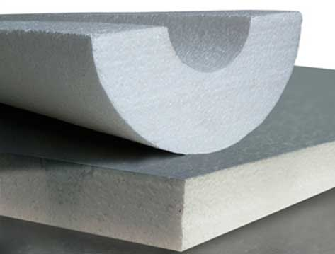

Placa ½ caña
Placas:
Aislantes de poliestireno expandido para la construcción de cielorrasos acústicos y térmicos, en planchas de diversas medidas, con una cara texturada o lisa.
Espesor: 25/ 38/ 63/ 75/ 100 mm.
Ancho: 1000 mm.
Largo: variable hasta 4 m.
½ caña:
Poliestireno expandido para aislación de cañerías. Confiere aislación térmica a cañerías frigoríficas, conductos de agua, aire hasta 70º evitando las pérdidas de calor y frío.
Bloques :
Espesor: 520 mm.
Ancho: 1020 mm.
Largo: 4030 mm.
Piezas especiales:
Por pantografo segun necesidades Presentacion: bolsas de 30 Kg con poliestireno aditivado.
Densidad: 137 30 kg/ m³.
Satisface norma: DIN A 402.
Opcional: dificilmente inflamable.
